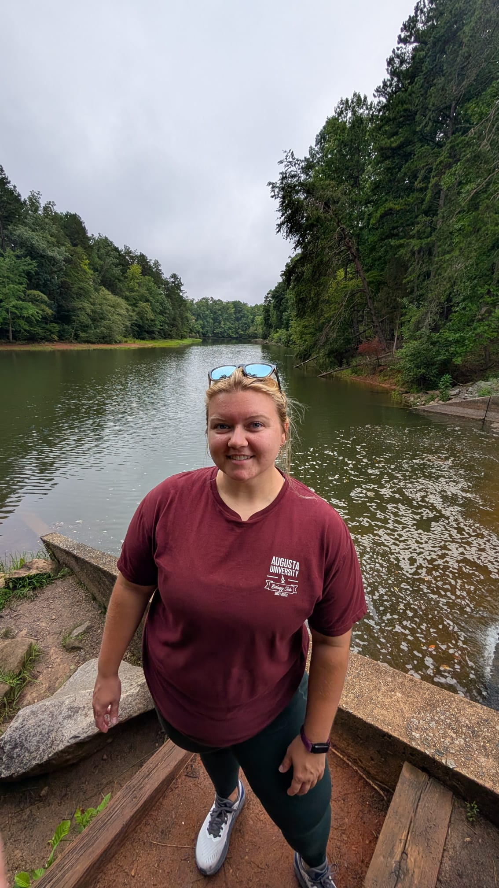
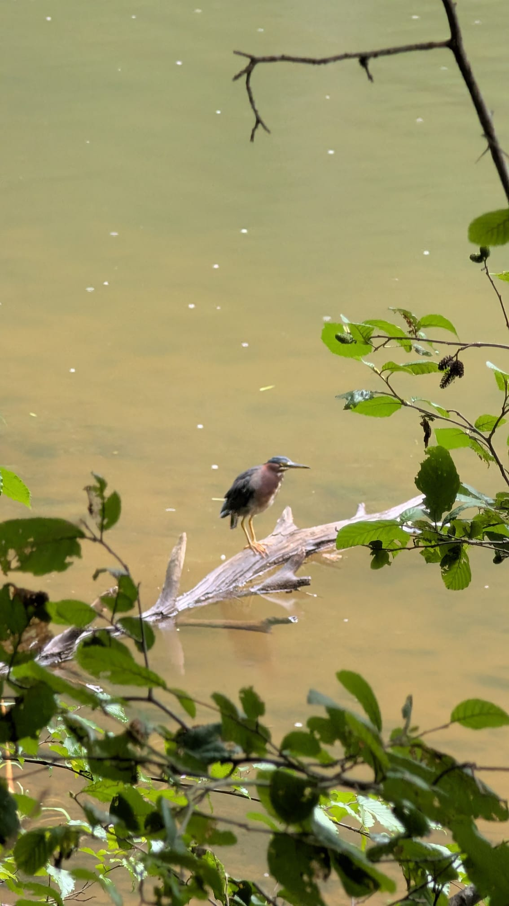

Marsh Wranglers is the personal website of Victoria (V) Makowski, an NSF RaMP Research Fellow at Georgia Southern University in Statesboro, GA. Broadly, she focuses on applied aquatic, coastal, and estuarine ecology, with interests in crustacean and fish community structure and physiology. Click around to explore what life is like for a marsh wrangler!
